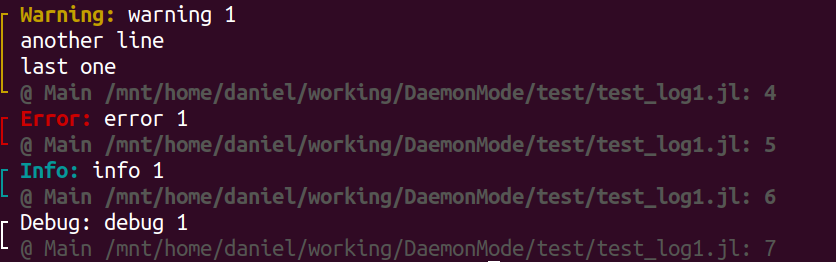

Posibilities
This package allow users to run its source code a lot faster. However, you could have doubts about the limitations of running a script through DaemonMode.
This section is to prove you that you can do more than expected.
Error Stack
Current version of Daemon can show the Error Stack in a very similar way than using directly julia.
Colors: The message error is remarked using Crayons.jl.
Number of calls: The calls due to DaemonMode are hidden, to improve the readibility.
For instance, with the following file bad.jl:
function fun2(a)
println(a+b)
end
function fun1()
fun2(4)
end
fun1()Directly with julia:
$ julia bad.jl
ERROR: LoadError: UndefVarError: b not defined
Stacktrace:
[1] fun2(::Int64) at /mnt/home/daniel/working/DaemonMode/test/bad.jl:2
[2] fun1() at /mnt/home/daniel/working/DaemonMode/test/bad.jl:6
[3] top-level scope at /mnt/home/daniel/working/DaemonMode/test/bad.jl:9
[4] include(::Function, ::Module, ::String) at ./Base.jl:380
[5] include(::Module, ::String) at ./Base.jl:368
[6] exec_options(::Base.JLOptions) at ./client.jl:296
[7] _start() at ./client.jl:506
in expression starting at /mnt/home/daniel/working/DaemonMode/test/bad.jl:9or in color: 
with DaemonMode it gaves:
$ julia -e 'using DaemonMode; runargs()' bad.jl
ERROR: LoadError: UndefVarError: b not defined
Stacktrace:
[1] fun2 at /mnt/home/daniel/working/DaemonMode/test/bad.jl:2
[2] fun1 at /mnt/home/daniel/working/DaemonMode/test/bad.jl:6
[3] top-level scope at /mnt/home/daniel/working/DaemonMode/test/bad.jl:9or in color:

Logging
The script can use Logging. There are two situations:
The messages are written to a external file.
The messages are written to console.
Both situations are working nicely. For instance, for the file test_log1.jl:
using Logging, LoggingExtras
function msg()
@warn "warning 1\nanother line\nlast one"
@error "error 1"
@info "info 1"
@debug "debug 1"
end
msg()running directly with julia:
$ julia test_log1.jl
┌ Warning: warning 1
│ another line
│ last one
└ @ Main ~/working/DaemonMode/test/test_log1.jl:4
┌ Error: error 1
└ @ Main ~/working/DaemonMode/test/test_log1.jl:5
[ Info: info 1while in color:

running with client:
$ juliaclient test_log1.jl
Warning: warning 1
│ another line
│ last one
└ @ Main /mnt/home/daniel/working/DaemonMode/test/test_log1.jl: 4
┌ Error: error 1
└ @ Main /mnt/home/daniel/working/DaemonMode/test/test_log1.jl: 5
┌ Info: info 1
└ @ Main /mnt/home/daniel/working/DaemonMode/test/test_log1.jl: 6
┌ Debug: debug 1
└ @ Main /mnt/home/daniel/working/DaemonMode/test/test_log1.jl: 7or in color:

Return code
juliaclient defined as:
alias juliaclient='julia –startup-file=no -e "using DaemonMode; runargs()"'
return
- 0 if the script runs without any problem.
- 1 if there is any unexpected problem.
By example:
$ jclient hello.jl
Hello, World!
$ echo $?
0
$ jclient bad.jl
ERROR: LoadError: UndefVarError: b not defined
Stacktrace:
[1] fun2 at /mnt/home/daniel/working/DaemonMode/test/bad.jl:2
[2] fun1 at /mnt/home/daniel/working/DaemonMode/test/bad.jl:6
[3] top-level scope at /mnt/home/daniel/working/DaemonMode/test/bad.jl:9
$ echo $?
1